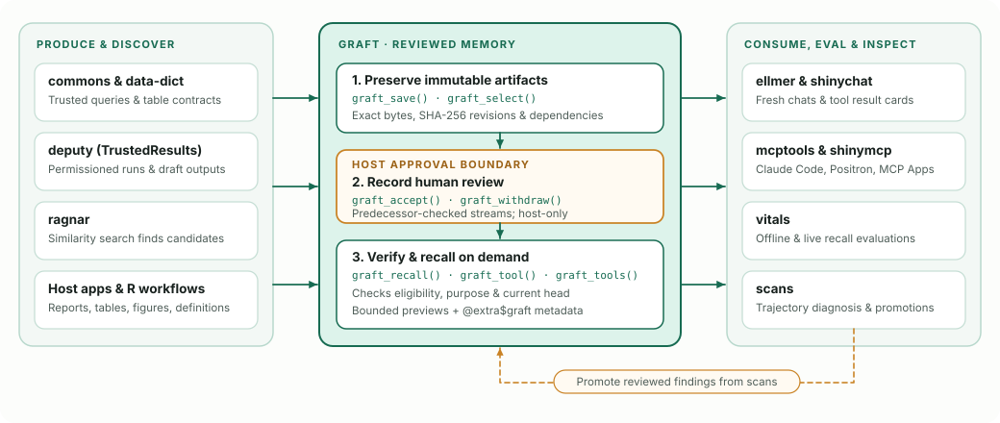

Graft is intentionally small. Rather than bundling an LLM client, a vector database, a semantic calculation engine, or a chat UI, it provides the one piece most agent stacks leave out: durable, reviewed, evidence-linked memory.

scans.
Ecosystem ownership
| Package | Owns | Boundary with graft |
|---|---|---|
| ellmer | Model calls, tool calling, structured outputs |
graft_tool() returns a standard
ellmer::ToolDef and ContentToolResult. Graft
never holds a chat or calls a model. |
| shinychat | Streaming chat UI and tool result cards |
graft_tool() attaches
shinychat::tool_result_display() metadata when shinychat is
installed. |
| ragnar | Document chunking and similarity search (RAG) | ragnar locates candidate passages; graft verifies whether a specific revision is currently accepted for use. |
| commons | Live data analysis, trusted calculations, calculation provenance | Commons executes analyses and tracks how an answer was computed; graft retains reviewed conclusions, reports, and evidence across sessions. |
| data-dict | Table schemas, constraints, and expression semantics | data-dict validates individual dictionaries; graft pins validated dictionaries alongside cross-workflow concepts and bindings. |
| mcptools | Model Context Protocol transport | Serve graft_tool() through
mcptools::mcp_server() so external clients (Claude Code,
Positron, Posit Assistant) can read reviewed memory. |
| vitals | Outcome evaluation for LLM tasks | Graft ships an offline vitals::Task for testing
accepted, corrected, withdrawn, and host-denied memory recall. |
| deputy | Governed agent runtime, permissions,
TrustedResults
|
deputy enforces read-only/plan permissions against
graft_tool() annotations and passes tool outputs to the
host for draft capture. |
| scans | Post-run trajectory diagnosis and review | scans inspects completed runs (including tool calls and promotion candidates); graft persists reviewed findings and memory for later runs. |
| shinymcp | Interactive Shiny UIs as MCP Apps | Applications can present a candidate artifact in a read-only MCP App
card while keeping graft_accept() behind a host
control. |
Host apps (tempest, rill,
crucible, your app) |
User identity, authorization, approval UX, retention | Applications choose what to save, who may accept or recall it, and when a session must reset after a correction. |
How graft composes with adjacent tools
Graft and ragnar
ragnar is a mutable DuckDB retrieval index: great for finding relevant chunks across many documents, with no built-in concept of human review, immutable evidence lineage, or withdrawal. Graft is the opposite: it checks exact revisions and current acceptance, without running embeddings or approximate search.
They pair naturally: ragnar finds, graft verifies.
Index accepted artifacts in ragnar keyed by exact stream or artifact
reference, then pass any search hit through graft_recall()
before showing it to a model so stale or withdrawn entries never
re-enter a prompt as current memory.
Graft and Commons
Use Commons to run an analysis against live data and record how it arrived at an answer. Use Graft when your application needs to keep the resulting report, table, figure, or agreed definition and record a team decision about reusing it later.
A Commons Trusted marker describes how a calculation ran; a
reviewer can still withdraw or supersede a conclusion for a project’s
purpose. Graft records that review lifecycle separately from calculation
execution. When sharing vocabulary across workflows, pass a published
release’s @context to commons::context_layer()
alongside a validated dictionary in
commons::data_source().
Graft and deputy
graft_tool() is a plain ellmer::ToolDef
annotated as read-only, closed-world, idempotent, and non-destructive.
deputy respects those annotations in
"standard" and "plan" modes (and in
"readonly" mode when allowlisted).
On the write side, agents should propose rather than accept. With
deputy’s TrustedResults(), the host application receives a
designated tool’s exact output without parsing model prose, saves it as
an unaccepted draft with graft_save(), and leaves
graft_accept() to an explicit review control.
Graft, vitals, and scans
- vitals measures whether an agent answers accurately and respects corrections, withdrawals, and access denials (see Evaluate agent recall).
-
scans inspects completed
ellmer,deputy,commons, andtempesttrajectories to diagnose tool failures, unexpected routes, and promotion candidates.
Every graft_tool() result carries a plain-data
@extra$graft record on its
ellmer::ContentToolResult (status,
stream, purpose, decision_id,
selection_id, root_refs,
artifact_refs, artifact_count,
text_bytes, truncated,
omitted_refs, and omitted_count) with no live
store handle and no raw payloads. That lets scans classify
Graft memory consultations deterministically across recorded
trajectories.
In the other direction, when a reviewer promotes a recurring finding
or untrusted route surfaced by scans, save the
scans investigation snapshot JSON as an immutable artifact
and declare it as a dependency of the reviewed note:
investigation_ref <- graft_save_file(
store,
"scans-investigation.json",
id = "scans:investigation:2026-11-26",
media_type = "application/json"
)
note_ref <- graft_save(
store,
"Count paid accounts active in the past 30 days.",
id = "metric:active-customer",
dependencies = investigation_ref
)
graft_accept(
store,
note_ref,
stream = "metric:active-customer",
expected = NULL,
key = "promote-1",
actor = "reviewer",
reason = "Promoted recurring untrusted route identified in scans",
purpose = "project-assistance"
)Graft and mcptools
Because graft_tool() has no model-controlled store or
stream arguments, you can pass it straight to
mcptools::mcp_server(tools = list(memory_tool)) to give
Claude Code, Positron, or Posit Assistant bounded read-only access to
reviewed project memory. See Serve it over MCP.
Core data model
Graft is built around four small, composable primitives exposed as S7 values:
-
Artifacts (
ArtifactRef,Artifact): Immutable bytes identified by a logicalidand content-addressedrevision(SHA-256 of canonical metadata plus payload digest). Saving updated content under the sameidcreates a new revision without overwriting the earlier one. -
Selections (
ArtifactSelection): Explicit root references together with their complete verified dependency closure. Reading a selection re-verifies every referenced artifact and digest. -
Decision streams (
Decision,Recall): Append-only journals recording explicit hostacceptandwithdrawevents for a named subject andpurpose, protected by expected-predecessor checks and idempotent request keys.-
graft_read()reads an exact historical artifact by reference. -
graft_recall()checks current host eligibility, purpose match, the stream’s current accepted head, and intact selected bytes. -
graft_streams()andgraft_history()inspect decisions without loading artifact payloads.
-
-
Vocabulary releases
(
VocabularyRelease): Immutable selections bundling shared concepts, relationships, qualified data-dict bindings, source bytes, and generated Markdown context so readers do not need the publishing CLI.
Persistence model
The abstract ArtifactStore S7 class has two built-in
implementations:
-
LocalArtifactStore(graft_store()): Stores content-addressed objects and append-only decision journals in a local directory. Several R processes can safely write to one store on a file system that honors advisory file locks—content writes are atomic staged renames and decisions take a per-stream file lock. -
PostgresArtifactStore(graft_store_postgres()): Stores the exact same bytes and digests ingraft_artifact_objectsinside a DBI transaction owned by your application, isolated by a host-selectedscopekey and serialized with a transaction-scoped advisory lock.
Neither store serializes live connections, ellmer chats, or R environments. Every object is plain canonical JSON or raw bytes, verified on read.